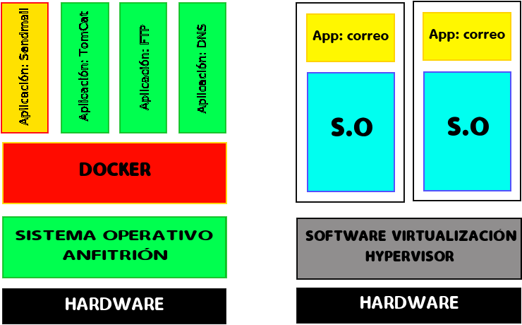

Docker es un sistema de virtualización que comparte con el anfitrión el
kernel y el sistema de archivos.
El anfitrión siempre es un sistema linux. Si estamos en Windows o MAC,necesitaré
una máquina virtual windows virtualizada con VirtualBox o similares.
Un software de máquinas virtuales necesita instalar el sistema operativo completo. Ejemplos de sistemas de virtualización:
Un software de contenedores es un sistema de virtualizacion que comparte el kernel con el anfitrion. Se basa en el concepto de microservicio, donde tengo todos los programas instalados, configurados y funcionando, gracias a los contenedores.

Para saber más sobre el tema:
Un dockerfile es una receta para crear una imagen para una aplicación particular de Docker. De este modo podemos tomar una imagen base, instalarle programas, configurar esos programas y dejarla preparada para crear contenedores a partir de ella.